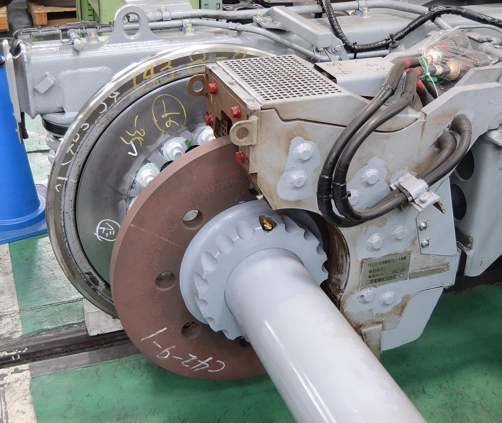

Lenzin laki ja pyörrevirrat
Miksi voimakas magneetti putoaa kupariputken läpi monta sekuntia, vaikka kupari ei ole magneettista ja tavallinen kappale putoaa saman matkan alle sekunnissa?
Pohjatiedot
- Kun suljetun johdinsilmukan läpi kulkeva magneettivuo muuttuu, silmukkaan syntyy induktiojännite $e = -N \Delta\Phi : \Delta t$ ja induktiovirtaluku Sähkömagneettinen induktio
- Virtajohdin tai virtasilmukka on itse magneetti, jolla on N- ja S-napaluku Virtajohtimen ja käämin magneettikenttä
Ydinpolku: etene vaiheiden mukaan. Valinnainen-merkityt tehtävät tarjoavat lisäharjoittelua. Valinnaisia tehtäviä 4.
Pohdinta
Kun voimakas neodyymimagneetti pudotetaan metrin pituiseen pystysuoraan kupariputkeen, se ei tule ulos heti. Kuluu monta sekuntia, ja kun putkeen kurkistaa ylhäältä, magneetin näkee leijuvan alaspäin hitaasti ja tasaisesti. Magneetti ei kuitenkaan tartu putken seinään, ja samankokoinen teräsmutteri putoaa saman putken läpi silmänräpäyksessä.
Mikä jarruttaa magneettia, vaikka mikään ei kosketa sitä, ja mihin sen putoamisen energia katoaa?
Valinnainen Kertaa: milloin induktiojännite syntyy?
Ennusta
Tee ennusteet ennen tutkimista 2 kysymystä
Ennuste 1: muovi-, alumiini- ja kupariputki
Ennuste 2: kupariputki, jossa on rako
Tutki
Pudota kappale metrin pituiseen pystysuoraan putkeen. Vaihda putken materiaalia ja kappaletta, ja vertaa putoamisaikoja, kuvaajaa ja energiapylväitä.
Simulaatio
Käyttöohje
Valitse putki ja kappale ja paina Pudota. Vasemmalla näet putken pituussuunnassa leikattuna. Kun magneetti putoaa metalliputkessa, sen ala- ja yläpuolella näkyvät violetit pyörrevirtarenkaat, joiden paksuus kuvaa jarruttavan voiman suuruutta. Punaiset nuolet ovat paino $\overline{G}$ ja jarruttava voima $\overline{F}_\text{j}$ samassa mittakaavassa. Kuvaajassa on pudonnut matka $y$ ajan $t$ funktiona; kunkin putken viimeisin magneetin pudotus jää näkyviin. Energiapylväät näyttävät potentiaalienergian vähenemisen $\Delta E_\text{p}$, liike-energian $E_\text{k}$ ja putken sisäenergiaksi muuttuneen energian $Q$. Kirjaa mittaus vasta, kun lukemissa lukee, että kappale on pudonnut putken läpi.
Mallin oletukset
Magneetin massa on $20\,\text{g}$ ja putken pituus $1{,}00\,\text{m}$; magneetti lähtee levosta putken yläpäästä, ja aika mitataan, kunnes se on pudonnut putken pituuden verran. Kuvan magneetti ei ole mittakaavassa. Ilmanvastusta ja kitkaa seinää vasten ei ole, eikä putken päiden vaikutusta oteta huomioon. Metalliputkessa jarruttava voima on mallissa verrannollinen vauhtiin, $F_\text{j} = k v$. Kerroin $k$ on valittu niin, että kupariputkessa magneetin tasainen loppuvauhti on $0{,}15\,\text{m/s}$, mikä on samaa suuruusluokkaa kuin koulun pudotuskokeissa. Alumiinin sähkönjohtavuus on noin $63\,\%$ kuparin johtavuudesta, joten alumiiniputken $k$ on $0{,}63$-kertainen. Rakoputkessa mallin $k$ on arviona kymmenesosa ehjän kupariputken arvosta. Muoviputki ja magnetoimaton teräskappale eivät jarrutu. Luvut ovat mallin laskemia arvoja, eivät mittauksia.
Laskennan selitys
Magneettiin vaikuttavat paino $G = mg$ alaspäin ja jarruttava voima $F_\text{j} = k v$ ylöspäin. Vauhdin kasvaessa jarruttava voima kasvaa, kunnes se on yhtä suuri kuin paino. Silloin magneetti putoaa tasaisella loppuvauhdilla
$$v_\text{t} = \frac{mg}{k}$$
Energiat lasketaan pudonneesta matkasta $y$ ja vauhdista $v$: $\Delta E_\text{p} = m g y$, $E_\text{k} = \tfrac{1}{2} m v^2$ ja putken sisäenergiaksi muuttunut energia $Q = \Delta E_\text{p} - E_\text{k}$. Muoviputkessa kappale putoaa vapaasti: $y = \tfrac{1}{2} g t^2$ ja $v = g t$.
Koe 1: putken materiaali
Testaa ennuste 1. Kappale on neodyymimagneetti; muuta vain putken materiaalia. Pudota magneetti muovi-, alumiini- ja kupariputkeen ja kirjaa jokaisesta putoamisaika, vauhti lopussa ja putken sisäenergiaksi muuttunut energia.
Alkutila: putki: muoviputki, kappale: neodyymimagneetti. Vakiona: kappale. Muutetaan: putki.
| putki | $t$ $(\text{s})$ | $v$ $(\text{m/s})$ | $Q$ $(\text{mJ})$ |
|---|
Koe 2: rako kupariputkessa
Testaa ennuste 2. Kappale on edelleen neodyymimagneetti. Pudota se ehjään kupariputkeen ja kupariputkeen, jossa on pitkittäinen rako, ja kirjaa putoamisajat ja sisäenergiaksi muuttunut energia.
Alkutila: putki: kupariputki, kappale: neodyymimagneetti. Vakiona: kappale. Muutetaan: putki.
| putki | $t$ $(\text{s})$ | $Q$ $(\text{mJ})$ |
|---|
Johtopäätös: mikä jarruttaa ja minne energia menee?
Kirjoita taulukoidesi perusteella: miten putken materiaali ja rako vaikuttavat putoamisaikaan? Vertaa kupariputken sisäenergiaa $Q$ potentiaalienergian vähenemiseen $mgh = 196{,}2\,\text{mJ}$ ja selitä, mihin magneetin energia menee ja miksi magneetti putoaa kupariputkessa tasaisella vauhdilla.
Mallivastaus
Muoviputkessa magneetti putoaa vapaasti $0{,}45\,\text{s}$:ssa ja on lopussa vauhdissa $4{,}43\,\text{m/s}$, eikä sisäenergiaa synny. Alumiiniputkessa putoaminen kestää $4{,}24\,\text{s}$ ja kupariputkessa $6{,}68\,\text{s}$; loppuvauhdit ovat vain $0{,}24\,\text{m/s}$ ja $0{,}15\,\text{m/s}$. Metalliseinään syntyvät pyörrevirrat jarruttavat magneettia, ja paremmin johtavassa kuparissa jarrutus on suurempi. Rakoputkessa aika lyhenee $0{,}82\,\text{s}$:iin, koska rako katkaisee putken ympäri kiertävät virrat. Jarrutus ei silti katoa: rakoputkessakin $Q = 173{,}9\,\text{mJ}$, koska pienemmät pyörrevirrat kiertävät yhä seinässä. Kupariputkessa $Q = 196{,}0\,\text{mJ}$ eli lähes koko $196{,}2\,\text{mJ}$:n potentiaalienergian väheneminen on muuttunut pyörrevirtojen kautta putken sisäenergiaksi. Jarruttava voima kasvaa vauhdin mukana, kunnes se on yhtä suuri kuin paino; sen jälkeen kokonaisvoima on nolla ja vauhti pysyy samana. Arvot ovat mallin laskemia.
Arvioi oma vastauksesi
Rastita kohdat, jotka omassa vastauksessasi jo on.
Kertaa asia teoriatiivistelmästä ja harjoittele tehtävillä.
Teoriatiivistelmä
Ydinajatus
Induktiovirta vastustaa muutosta
Luvussa Sähkömagneettinen induktio suljettuun johdinsilmukkaan syntyi induktiovirta aina, kun silmukan läpi kulkeva magneettivuo muuttui. Virran suunta noudattaa yhtä sääntöä, Lenzin lakia: induktiovirran suunta on aina sellainen, että sen oma magneettikenttä vastustaa sitä muutosta, joka induktiovirran synnyttää. Kun magneetin N-napa työnnetään kohti kuparirengasta, renkaan läpi kulkeva vuo kasvaa. Renkaan induktiovirta tekee renkaasta pienen magneetin, jonka magneetin puoleinen sivu on N-napa, joten rengas hylkii lähestyvää magneettia. Kun magneetti vedetään pois, vuo pienenee. Nyt virta kiertää toiseen suuntaan, renkaan magneetin puoleinen sivu on S-napa, ja rengas vetää magneettia takaisin. Kummassakin tapauksessa renkaan voima vastustaa magneetin liikettä.
Lenzin laki on energian säilymistä
Miksi induktiovirta ei voisi auttaa muutosta? Jos lähestyvä magneetti vetäisi rengasta puoleensa, magneetti kiihtyisi kohti rengasta, vuo muuttuisi yhä nopeammin, induktiovirta kasvaisi ja veto voimistuisi. Magneetin liike-energia ja renkaan sähköenergia kasvaisivat ilman, että kukaan tekisi työtä: syntyisi ikiliikkuja, joka tuottaa energiaa tyhjästä. Energian säilyminen estää tämän. Siksi magneettia on liikutettava voimalla, joka tekee työtä renkaan vastustavaa voimaa vastaan, ja juuri tämä työ muuttuu induktiovirran sähköenergiaksi. Virta lämmittää johdinta, joten energia päätyy lopulta johtimen sisäenergiaksi.
Pyörrevirrat
Induktiovirta ei tarvitse erillistä johdinsilmukkaa. Kun magneettivuo muuttuu umpinaisessa metallikappaleessa, kuten levyssä tai putken seinässä, metalliin syntyy suljettuja virtasilmukoita, pyörrevirtoja. Kupariputkessa putoavan magneetin alapuolella putken seinän läpi kulkeva vuo kasvaa ja yläpuolella pienenee. Lenzin lain mukaan alapuolinen pyörrevirta hylkii magneettia ja yläpuolinen vetää sitä, joten molemmat jarruttavat putoamista. Pyörrevirrat ovat sitä suurempia, mitä nopeammin magneetti liikkuu, joten myös jarruttava voima kasvaa vauhdin mukana. Kun jarruttava voima on kasvanut yhtä suureksi kuin magneetin paino, kokonaisvoima on nolla, ja magneetti putoaa tasaisella vauhdilla. Muoviputkessa ei synny virtoja, koska muovi ei johda sähköä, eikä kupariputki jarruta magnetoimatonta teräskappaletta, koska sen liike ei muuta putken läpi kulkevaa vuota.

Pyörrevirtajarru, induktioliesi ja metallinilmaisin
Induktiojarrussa eli pyörrevirtajarrussa metallilevy tai kisko liikkuu magneettikentässä, ja pyörrevirrat jarruttavat liikettä. Vuoristoradan vaunun alle kiinnitetyt kupari- tai alumiinilevyt kulkevat radan vahvojen magneettien välistä, ja junissa jarrun sähkömagneetit ovat lähellä kiskoa. Jarru ei kulu, koska mikään ei hankaa, ja se jarruttaa sitä voimakkaammin, mitä suurempi vauhti on. Pysähtymisen lähellä jarrutus heikkenee, joten lopullinen pysäytys tarvitsee tavallisen jarrun. Induktioliedessä lasin alla olevan kelan vaihtovirta muuttaa magneettikenttää kymmeniätuhansia kertoja sekunnissa, ja pyörrevirrat lämmittävät kattilan pohjaa. Lasi ei johda sähköä, joten se lämpenee vain kuuman kattilan vaikutuksesta. Metallinilmaisimen kela synnyttää vaihtuvan kentän, ja maassa olevan metallin pyörrevirtojen oma kenttä havaitaan ilmaisimen kelassa.
Kun pyörrevirroista on haittaa
Pyörrevirrat muuttavat sähköenergiaa aina sisäenergiaksi. Muuntajan ja sähkömoottorin rautasydämessä magneettikenttä vaihtelee jatkuvasti, ja umpinaisessa sydämessä kiertäisivät suuret pyörrevirrat, jotka kuumentaisivat sydäntä ja hukkaisivat energiaa. Siksi sydän kootaan ohuista levyistä, joiden välissä on sähköä johtamaton eristekerros. Pyörrevirrat voivat kiertää vain kunkin kapean levyn sisällä, joten ne jäävät pieniksi. Muuntajasta kerrotaan lisää luvussa Muuntaja ja sähköenergian siirto. Sama ajatus näkyy kupariputkessa, johon on sahattu pitkittäinen rako: rako katkaisee putken ympäri kiertävät virrat, ja magneetti putoaa paljon nopeammin. Pienemmät pyörrevirrat kiertävät yhä raon välisessä seinässä, joten jarrutus ei katoa kokonaan.
Lenzin laki ja energia
Luvun Sähkömagneettinen induktio induktiolain miinusmerkki on Lenzin laki:
$$e = -N \frac{\Delta \Phi}{\Delta t}$$
missä $e$ on induktiojännite (V), $N$ silmukan kierrosten lukumäärä, $\Delta\Phi$ magneettivuon muutos (Wb) ja $\Delta t$ muutokseen kulunut aika (s). Miinusmerkki kertoo, että induktiovirran kenttä vastustaa vuon muutosta. Suuruus lasketaan ilman merkkiä, ja suunta päätellään Lenzin laista.
Energian säilyminen kertoo, mihin putoavan magneetin energia menee. Kun magneetti putoaa korkeuden $h$, sen potentiaalienergia pienenee määrän $mgh$. Osa muuttuu liike-energiaksi ja loput pyörrevirtojen kautta putken sisäenergiaksi $Q$:
$$\begin{aligned} &mgh = \tfrac{1}{2} m v^2 + Q \\ &Q = mgh - \tfrac{1}{2} m v^2 \end{aligned}$$
missä $m$ on magneetin massa (kg), $g = 9{,}81\,\text{m/s}^2$, $h$ pudotuskorkeus (m), $v$ vauhti lopussa (m/s) ja $Q$ sisäenergiaksi muuttunut energia (J). Kun magneetti putoaa tasaisella vauhdilla, jarruttava voima $F$ on yhtä suuri kuin paino $mg$. Ajassa $\Delta t$ voima vaikuttaa matkalla $v \Delta t$ ja tekee työn $F v \Delta t$, joten sisäenergia kasvaa teholla
$$P = F v$$
missä $P$ on teho (W), $F$ jarruttava voima (N) ja $v$ vauhti (m/s). Sama kaava pätee jokaiseen pyörrevirtajarruun: jarruttava voima kertaa vauhti on teho, jolla liike-energia muuttuu sisäenergiaksi.
Yleinen virhekäsitys
Moni ajattelee, että kupariputki hidastaa magneettia, koska magneetti tarttuu kupariin. Kupari ei kuitenkaan ole ferromagneettinen aine: levossa oleva magneetti ei tartu kupariputken seinään, eikä putki jarruta samanmuotoista magnetoimatonta teräskappaletta lainkaan. Jarrutus syntyy vain liikkeestä, koska vain liikkuva magneetti muuttaa putken läpi kulkevaa vuota. Toinen yleinen virhe on sanoa, että induktiovirran kenttä on aina magneetin kenttää vastaan. Lenzin laki ei vastusta kenttää vaan sen muutosta. Kun magneetti loittonee renkaasta, renkaan läpi kulkeva vuo pienenee, ja induktiovirran kenttä osoittaa renkaan keskellä samaan suuntaan kuin magneetin kenttä, jolloin rengas vetää magneettia puoleensa.
Tiivistelmä
- Lenzin laki: induktiovirran oma magneettikenttä vastustaa sitä muutosta, joka induktiovirran synnyttää. Lähestyvää magneettia rengas hylkii, loittonevaa se vetää.
- Lenzin laki seuraa energian säilymisestä. Työ, joka tehdään magneettia liikutettaessa, muuttuu induktiovirran sähköenergiaksi ja edelleen johtimen sisäenergiaksi: $Q = mgh - \tfrac{1}{2} m v^2$.
- Metallikappaleeseen syntyy muuttuvassa magneettikentässä pyörrevirtoja. Ne jarruttavat liikettä sitä voimakkaammin, mitä suurempi vauhti on, ja jarrutuksen teho on $P = F v$.
- Pyörrevirtoja hyödynnetään induktiojarrussa, induktioliedessä ja metallinilmaisimessa. Muuntajan ja moottorin rautasydän kootaan eristetyistä levyistä, jotta pyörrevirrat ja niiden energiahäviö jäävät pieniksi.
Valinnainen Palaa ennusteisiisi
Vertaa ennusteitasi kokeiden mallin arvoihin ja Lenzin lakiin. Palaa sitten alun kysymykseen: mikä jarruttaa magneettia kupariputkessa, ja miksi teräsmutteri putoaa saman putken läpi jarruttamatta?
Muuttaisitko ennustettasi?
Sovella
Esimerkki
Tehtävä
Opiskelija pudottaa $25\,\text{g}$:n neodyymimagneetin $1{,}20\,\text{m}$:n pituiseen pystysuoraan kupariputkeen ja mittaa, että magneetti tulee putken alapäästä ulos $8{,}0\,\text{s}$:n kuluttua. Magneetti putoaa lähes koko matkan tasaisella vauhdilla. Kuinka paljon putken sisäenergia kasvaa putoamisen aikana?
Vaihe 1/7
Tunnetut ja kysytty. Magneetin massa $m = 25\,\text{g}$, putken pituus eli pudotuskorkeus $h = 1{,}20\,\text{m}$, putoamisaika $t = 8{,}0\,\text{s}$ ja $g = 9{,}81\,\text{m/s}^2$. Kysytään putken sisäenergian kasvua $Q$.
Vaihe 2/7
Periaate. Energia säilyy: pyörrevirrat muuttavat sen osan potentiaalienergian vähenemisestä, joka ei jää magneetin liike-energiaksi, putken sisäenergiaksi. Ilmanvastus on näin pienellä vauhdilla merkityksetön. Vauhti on lähes koko matkan sama, joten se saadaan matkasta ja ajasta.
Vaihe 3/7
Kaava ratkaistuna. $$\begin{aligned} v &= \frac{h}{t} \\ Q &= mgh - \tfrac{1}{2} m v^2 \end{aligned}$$
Vaihe 4/7
Yksikkömuunnokset. Massa kilogrammoina:
Muut suureet ovat SI-yksiköissä.
Vaihe 5/7
Sijoitus. Lasketaan ensin vauhti ja sitten energia:
$$\begin{aligned} v &= \frac{h}{t} \\ &= \frac{1{,}20\,\text{m}}{8{,}0\,\text{s}} \\ &= 0{,}15\,\text{m/s} \\[6pt] Q &= mgh - \tfrac{1}{2} m v^2 \\ &= 0{,}025\,\text{kg} \cdot 9{,}81\,\text{m/s}^2 \cdot 1{,}20\,\text{m} \\ &\quad - \tfrac{1}{2} \cdot 0{,}025\,\text{kg} \cdot (0{,}15\,\text{m/s})^2 \\ &= 0{,}29430\,\text{J} - 0{,}00028\,\text{J} \\ &= 0{,}29402\,\text{J} \end{aligned}$$
Vaihe 6/7
Tulos. Putken sisäenergia kasvaa noin $0{,}29\,\text{J}$. Tulos ilmoitetaan kahdella merkitsevällä numerolla, kuten massa $25\,\text{g}$ ja aika $8{,}0\,\text{s}$.
Vaihe 7/7
Järkevyys. Liike-energiaksi jää vain noin $0{,}1\,\%$ potentiaalienergian vähenemisestä, joten lähes kaikki energia lämmittää putkea, kuten tasaisessa putoamisessa pitääkin. Jos putken massa on $0{,}30\,\text{kg}$, kuparin ominaislämpökapasiteetti $385\,\tfrac{\text{J}}{\text{kg}\cdot\text{K}}$ antaa lämpötilan nousuksi vain noin $0{,}003\,\text{K}$: siksi putki ei tunnu lämpenevän.
Valinnainen Etsi virhe
Sovella uuteen tilanteeseen: vuoristoradan jarru
Vuoristoradan loppusuoralla vaunun alle kiinnitetyt kuparilevyt kulkevat voimakkaiden kestomagneettien välistä. Pyörrevirrat hidastavat $2{,}4\,\text{t}$:n vaunun vauhdista $25\,\text{m/s}$ vauhtiin $10\,\text{m/s}$ vaakasuoralla $30\,\text{m}$:n matkalla. Muut vastukset jätetään huomiotta.
Kuinka suuri on jarruttava voima keskimäärin? Vastaa kilonewtoneina.
Vihje 1: ohjaava kysymys
Mihin vaunun menettämä liike-energia menee? Mikä voima tekee työtä jarrutusmatkalla?
Vihje 2: mikä yhteys
Jarruttavan voiman työ on yhtä suuri kuin liike-energian väheneminen: $F s = \tfrac{1}{2} m v_1^2 - \tfrac{1}{2} m v_2^2$.
Vihje 3: välivaihe
Ratkaise voima: $F = \dfrac{m (v_1^2 - v_2^2)}{2 s}$, missä $m = 2{,}4 \cdot 1000\,\text{kg}$, $v_1 = 25\,\text{m/s}$, $v_2 = 10\,\text{m/s}$ ja $s = 30\,\text{m}$.
Näytä ratkaisu
Annettu
vaunun massa $m = 2{,}4\,\text{t}$, alkuvauhti $v_1 = 25\,\text{m/s}$, loppuvauhti $v_2 = 10\,\text{m/s}$, jarrutusmatka $s = 30\,\text{m}$
Kysytty
jarruttavan voiman keskimääräinen suuruus $F$ kilonewtoneina
Periaate
Rata on vaakasuora ja muut vastukset jätetään huomiotta, joten vain pyörrevirtojen jarruttava voima tekee työtä. Energia säilyy: voiman työ $F s$ on yhtä suuri kuin liike-energian väheneminen, ja pyörrevirrat muuttavat tämän energian kuparilevyjen sisäenergiaksi.
Kaava
$F s = \tfrac{1}{2} m v_1^2 - \tfrac{1}{2} m v_2^2$, josta $F = \dfrac{m (v_1^2 - v_2^2)}{2 s}$
Muunnokset
Lopuksi $1\,\text{kN} = 1000\,\text{N}$.
Sijoitus
joten
Vastaus
$21\,\text{kN}$
Kaksi merkitsevää numeroa kuten massassa $2{,}4\,\text{t}$ ja vauhdeissa.
Järkevyys
Hidastuvuus on $21\,000\,\text{N} : 2400\,\text{kg} \approx 8{,}8\,\text{m/s}^2$ eli vähän alle $g$:n, mikä on voimakas mutta ihmiselle siedettävä jarrutus. Liike-energiasta $630\,\text{kJ}$ muuttuu levyjen sisäenergiaksi, joten levyt lämpenevät jokaisella jarrutuksella.
Tarkista osaamisesi
Exit ticket
Vastaa ensin itse ja avaa vastaus vasta sitten.
- Pöydällä makaavan kuparirenkaan yläpuolelta vedetään sauvamagneetti ylöspäin poispäin renkaasta. Hylkiikö vai vetääkö rengas magneettia, ja miksi?
Vastaus
Vetää. Renkaan läpi kulkeva vuo pienenee, ja Lenzin lain mukaan induktiovirta vastustaa pienenemistä: renkaan magneetin puoleiseen sivuun syntyy magneetin lähimmän navan vastakkainen napa, joten rengas vetää loittonevaa magneettia puoleensa.
- Miksi muuntajan rautasydän kootaan ohuista toisistaan eristetyistä levyistä eikä tehdä yhdestä umpinaisesta rautakappaleesta?
Vastaus
Vaihtuva magneettikenttä synnyttää rautasydämeen pyörrevirtoja, jotka muuttavat sähköenergiaa sydämen sisäenergiaksi. Eristekerrokset katkaisevat suuret virtasilmukat, joten virrat kiertävät vain kapeiden levyjen sisällä, jäävät pieniksi ja energiahäviö pienenee.
1. Käsite: rengas ja magneetti
2. Laske: lämmitysteho
$18\,\text{g}$:n magneetti putoaa pystysuorassa alumiiniputkessa tasaisella vauhdilla $0{,}24\,\text{m/s}$. Kuinka suurella teholla putken sisäenergia kasvaa? Vastaa milliwatteina.
Vihje 1: ohjaava kysymys
Vauhti on tasainen. Kuinka suuri jarruttava voima silloin on?
Vihje 2: mikä yhteys
Tasaisella vauhdilla jarruttava voima on yhtä suuri kuin paino, $F = m g$, ja teho on $P = F v$.
Vihje 3: välivaihe
$P = 0{,}018\,\text{kg} \cdot 9{,}81\,\text{m/s}^2 \cdot 0{,}24\,\text{m/s}$
Näytä ratkaisu
Annettu
magneetin massa $m = 18\,\text{g}$, tasainen vauhti $v = 0{,}24\,\text{m/s}$, $g = 9{,}81\,\text{m/s}^2$
Kysytty
teho $P$, jolla putken sisäenergia kasvaa, milliwatteina
Periaate
Vauhti on tasainen, joten kokonaisvoima on nolla ja pyörrevirtojen jarruttava voima on yhtä suuri kuin paino, $F = m g$. Liike-energia ei muutu, joten potentiaalienergia muuttuu kokonaan putken sisäenergiaksi teholla, jolla jarruttava voima tekee työtä: $P = F v$.
Kaava
$F = m g$ ja $P = F v$, joten $P = m g v$
Muunnokset
Lopuksi $1\,\text{W} = 1000\,\text{mW}$.
Sijoitus
Vastaus
$42\,\text{mW}$
Kaksi merkitsevää numeroa kuten massassa $18\,\text{g}$ ja vauhdissa $0{,}24\,\text{m/s}$.
Järkevyys
Arvio pyöreillä luvuilla: paino on noin $0{,}2\,\text{N}$, ja $0{,}2\,\text{N} \cdot 0{,}2\,\text{m/s} = 0{,}04\,\text{W}$. Teho on hyvin pieni, joten putki ei tunnu lämpenevän.
Ehdotus: yksi vastaus ei vielä kerro koko osaamistasi, mutta kertaa asia teoriatiivistelmästä ja tee ydintehtävät.
Valinnainen 3. Selitä: miksi induktiovirta vastustaa?
Kuvittele maailma, jossa induktiovirta kulkisi Lenzin lain vastaisesti eli auttaisi muutosta. Selitä energian säilymisen avulla, mitä tapahtuisi, kun magneetti pudotetaan kupariputkeen, ja miksi Lenzin lain täytyy pitää paikkansa.
Mallivastaus
Jos induktiovirta auttaisi muutosta, putoavan magneetin alapuolinen pyörrevirta vetäisi magneettia alaspäin ja yläpuolinen työntäisi sitä. Magneetti kiihtyisi nopeammin kuin vapaasti pudotessa, jolloin vuo muuttuisi yhä nopeammin, pyörrevirrat kasvaisivat ja magneettia kiihdyttävä voima kasvaisi. Magneetin liike-energia ja putken sisäenergia kasvaisivat yhtä aikaa enemmän kuin potentiaalienergiaa vähenee: energiaa syntyisi tyhjästä, ja putkesta saisi ikiliikkujan. Energian säilyminen estää tämän. Siksi induktiovirran on vastustettava muutosta: pyörrevirrat jarruttavat magneettia, ja potentiaalienergiasta osa muuttuu putken sisäenergiaksi, mutta energian kokonaismäärä pysyy samana.
Arvioi oma vastauksesi
Rastita kohdat, jotka omassa vastauksessasi jo on.
Kertaa asia teoriatiivistelmästä ja harjoittele tehtävillä.
Kertaa luvun käsitteet
Jos valitset Kertaa myöhemmin, kortti siirtyy kertauspakkaasi.
- Lenzin laki
- Indusoitunut virta vastustaa sen syntyyn johtanutta muutosta.
Tehtävät
Taso 1 · perusharjoitus 5 tehtävää
Yksi kaava tai yksi päättelyaskel. Ydintehtävät ensin, loput lisäharjoitusta.
- Tehtävä 6-1Ydintehtävä
$40\,\text{g}$:n neodyymimagneetti putoaa pystysuorassa kupariputkessa tasaisella vauhdilla. Kuinka suuri jarruttava voima pyörrevirroista magneettiin kohdistuu?
Vastaus
$0{,}39\,\text{N}$
Näytä ratkaisu
Annettu
magneetin massa $m = 40\,\text{g}$, vauhti tasainen, $g = 9{,}81\,\text{m/s}^2$
Kysytty
pyörrevirtojen jarruttava voima $F$ newtoneina
Periaate
Vauhti on tasainen, joten Newtonin ensimmäisen lain mukaan magneettiin vaikuttavien voimien summa on nolla. Magneettiin vaikuttavat vain paino alaspäin ja pyörrevirtojen jarruttava voima ylöspäin, joten jarruttava voima on yhtä suuri kuin paino.
Kaava
$F - m g = 0$, josta $F = m g$
Muunnokset
$m$$= 40\,\text{g}$$= 40 \cdot 0{,}001\,\text{kg}$$= 0{,}040\,\text{kg}$Sijoitus
$F$$= 0{,}040\,\text{kg} \cdot 9{,}81\,\text{m/s}^2$$= 0{,}3924\,\text{N}$Vastaus
$0{,}39\,\text{N}$
Kaksi merkitsevää numeroa kuten massassa $40\,\text{g}$.
Järkevyys
Voima on sama kuin $40\,\text{g}$:n kappaleen paino, noin $0{,}4\,\text{N}$. Jos voima olisi pienempi, magneetti kiihtyisi; jos suurempi, se hidastuisi. Tasainen vauhti vaatii täsmälleen painon suuruisen voiman.
- Tehtävä 6-2Ydintehtävä
Kevyt kuparirengas riippuu langan varassa. Sauvamagneetin S-napa työnnetään nopeasti kohti rengasta. Kumpi napa syntyy renkaan magneetin puoleiselle sivulle, ja hylkiikö vai vetääkö rengas magneettia?
Vastaus
Renkaan magneetin puoleiselle sivulle syntyy S-napa, ja rengas hylkii magneettia.
Näytä ratkaisu
Kysytty
renkaan magneetin puoleisen sivun napa ja se, hylkiikö vai vetääkö rengas magneettia
Periaate
Lenzin lain mukaan induktiovirran oma magneettikenttä vastustaa sitä muutosta, joka virran synnyttää. Lähestyvä magneetti kasvattaa renkaan läpi kulkevaa vuota, joten renkaan kenttä vastustaa kasvua.
Mallivastaus
Kun S-napa lähestyy, renkaan läpi kulkeva vuo kasvaa. Induktiovirta kiertää niin, että renkaasta tulee magneetti, joka vastustaa magneetin tuloa: renkaan magneetin puoleiselle sivulle syntyy S-napa. Samannimiset navat hylkivät toisiaan, joten rengas hylkii magneettia ja heilahtaa poispäin siitä. Sama tapahtuisi, jos lähestyvä napa olisi N-napa; silloin renkaan magneetin puoleinen sivu olisi N-napa. Renkaan voima vastustaa siis aina magneetin liikettä, mikä vastaa energian säilymistä: magneettia työntävä tekee työtä, joka muuttuu renkaan sähköenergiaksi ja sisäenergiaksi.
- Tehtävä 6-3
Pyörrevirtajarru hidastaa $450\,\text{kg}$:n vuoristoratavaunua vaakasuoralla radalla vauhdista $22\,\text{m/s}$ vauhtiin $6{,}0\,\text{m/s}$. Muut vastukset jätetään huomiotta. Kuinka paljon energiaa jarrun kuparilevyjen sisäenergiaksi muuttuu? Anna vastaus kilojouleina.
Vastaus
$1{,}0 \cdot 10^2\,\text{kJ}$
Näytä ratkaisu
Annettu
vaunun massa $m = 450\,\text{kg}$, alkuvauhti $v_1 = 22\,\text{m/s}$, loppuvauhti $v_2 = 6{,}0\,\text{m/s}$, rata vaakasuora
Kysytty
kuparilevyjen sisäenergiaksi muuttuva energia $Q$ kilojouleina
Periaate
Rata on vaakasuora ja muut vastukset jätetään huomiotta, joten potentiaalienergia ei muutu ja ainoa energian muutos on liike-energian väheneminen. Energia säilyy: pyörrevirrat muuttavat koko liike-energian vähenemisen jarrun levyjen sisäenergiaksi.
Kaava
$Q$$= \dfrac{m v_1^2}{2} - \dfrac{m v_2^2}{2}$eli $Q = \dfrac{m (v_1^2 - v_2^2)}{2}$
Muunnokset
Ei tarvita: suureet ovat SI-yksiköissä. Lopuksi $1\,\text{kJ} = 1000\,\text{J}$.
Sijoitus
$Q$$= \tfrac{1}{2} \cdot 450\,\text{kg} \cdot \left((22\,\text{m/s})^2 - (6{,}0\,\text{m/s})^2\right)$$= 225\,\text{kg} \cdot 448\,\text{m}^2/\text{s}^2$$= 100\,800\,\text{J}$$= 100{,}8\,\text{kJ}$Vastaus
$1{,}0 \cdot 10^2\,\text{kJ}$
Eli noin $100\,\text{kJ}$, kaksi merkitsevää numeroa kuten loppuvauhdissa $6{,}0\,\text{m/s}$ ja alkuvauhdissa $22\,\text{m/s}$.
Järkevyys
Alkuhetken liike-energia on
$\tfrac{1}{2} \cdot 450\,\text{kg} \cdot (22\,\text{m/s})^2$$\approx 109\,\text{kJ}$ja vaunulle jää vain noin $8\,\text{kJ}$, koska liike-energia on verrannollinen vauhdin neliöön. Jarru muuttaa siis suurimman osan liike-energiasta sisäenergiaksi, kuten pitääkin.
- Tehtävä 6-4
$25\,\text{g}$:n magneetti putoaa pystysuorassa alumiiniputkessa tasaisella vauhdilla $0{,}30\,\text{m/s}$. Kuinka suurella teholla putken sisäenergia kasvaa? Anna vastaus milliwatteina.
Vastaus
$74\,\text{mW}$
Näytä ratkaisu
Annettu
magneetin massa $m = 25\,\text{g}$, tasainen vauhti $v = 0{,}30\,\text{m/s}$, $g = 9{,}81\,\text{m/s}^2$
Kysytty
teho $P$, jolla putken sisäenergia kasvaa, milliwatteina
Periaate
Vauhti on tasainen, joten pyörrevirtojen jarruttava voima on yhtä suuri kuin paino, $F = m g$. Liike-energia ei muutu, joten jarruttavan voiman työ eli potentiaalienergian väheneminen muuttuu kokonaan putken sisäenergiaksi. Teho on voima kertaa vauhti.
Kaava
$F = m g$ ja $P = F v$, joten $P = m g v$
Muunnokset
$m$$= 25\,\text{g}$$= 25 \cdot 0{,}001\,\text{kg}$$= 0{,}025\,\text{kg}$Lopuksi $1\,\text{W} = 1000\,\text{mW}$.
Sijoitus
$P$$= 0{,}025\,\text{kg} \cdot 9{,}81\,\text{m/s}^2 \cdot 0{,}30\,\text{m/s}$$= 0{,}073575\,\text{W}$$= 73{,}575\,\text{mW}$Vastaus
$74\,\text{mW}$
Kaksi merkitsevää numeroa kuten massassa $25\,\text{g}$ ja vauhdissa $0{,}30\,\text{m/s}$.
Järkevyys
Pyöreillä luvuilla paino on noin $0{,}25\,\text{N}$ ja $0{,}25\,\text{N} \cdot 0{,}3\,\text{m/s} \approx 0{,}075\,\text{W}$. Teho on paljon pienempi kuin taskulampun polttimon, joten putki ei tunnu lämpenevän.
- Tehtävä 6-5
Induktiolieden lasipinnan alla on kela, jossa kulkee nopeasti vaihteleva virta. Teräskattila lämpenee lieden päällä nopeasti, mutta lasipinta kattilan vieressä pysyy viileänä. Miksi kattila lämpenee mutta lasi ei?
Vastaus
Kelan vaihtuva magneettikenttä synnyttää sähköä johtavaan kattilan pohjaan pyörrevirtoja, jotka lämmittävät sitä; lasi ei johda sähköä, joten siihen ei synny virtoja.
Näytä ratkaisu
Kysytty
miksi induktioliesi lämmittää kattilan mutta ei lasipintaa
Periaate
Muuttuva magneettikenttä synnyttää pyörrevirtoja sähköä johtavaan kappaleeseen, ja virrat muuttavat sähköenergiaa johteen sisäenergiaksi. Virta tarvitsee johteen, jossa se voi kiertää suljettuna silmukkana.
Mallivastaus
Kelan vaihtovirta synnyttää magneettikentän, joka vaihtaa suuntaansa kymmeniätuhansia kertoja sekunnissa. Kentän läpäisemään kattilan teräspohjaan syntyy induktiovirtoja, pyörrevirtoja, jotka kiertävät suljettuina silmukoina pohjan metallissa. Pohjan resistanssin vuoksi virrat muuttavat sähköenergiaa pohjan sisäenergiaksi, ja pohja kuumenee ja lämmittää ruoan. Lasi on sähköeriste, joten siihen ei synny virtoja, vaikka kenttä kulkee sen läpi. Lasi lämpenee vain kuuman kattilan pohjan kohdalta, kun lämpöä johtuu kattilasta lasiin; kattilan vieressä se pysyy viileänä.
Taso 2 · soveltava harjoitus 4 tehtävää
Kaksi vaihetta, mittausaineiston käsittely, yksikkömuunnos tai kaavan ratkaiseminen. Ydintehtävät ensin, loput lisäharjoitusta.
- Tehtävä 6-6Ydintehtävä
Magneetti, jonka massa on $20\,\text{g}$, pudotetaan $1{,}50\,\text{m}$:n pituiseen pystysuoraan kupariputkeen. Se tulee putken alapäästä ulos $10\,\text{s}$:n kuluttua ja putoaa lähes koko matkan tasaisella vauhdilla.
Kuinka suurella teholla putken sisäenergia kasvaa putoamisen aikana? Anna vastaus milliwatteina.
Vastaus
$29\,\text{mW}$
Näytä ratkaisu
Annettu
magneetin massa $m = 20\,\text{g}$, putken pituus $h = 1{,}50\,\text{m}$, putoamisaika $t = 10\,\text{s}$, vauhti lähes tasainen, $g = 9{,}81\,\text{m/s}^2$
Kysytty
putken sisäenergian keskimääräinen kasvuteho $P$ milliwatteina
Periaate
Vauhti on lähes koko matkan tasainen, joten se saadaan matkasta ja ajasta, ja jarruttava voima on yhtä suuri kuin paino. Liike-energia ei tasaisessa putoamisessa muutu, joten potentiaalienergia muuttuu pyörrevirtojen kautta putken sisäenergiaksi teholla $P = F v$.
Kaava
$v = \dfrac{h}{t}$, $F = m g$ ja $P = F v$, joten $P = m g v$
Muunnokset
$m$$= 20\,\text{g}$$= 20 \cdot 0{,}001\,\text{kg}$$= 0{,}020\,\text{kg}$Lopuksi $1\,\text{W} = 1000\,\text{mW}$.
Sijoitus
$v$$= \dfrac{1{,}50\,\text{m}}{10\,\text{s}}$$= 0{,}15\,\text{m/s}$$P$$= 0{,}020\,\text{kg} \cdot 9{,}81\,\text{m/s}^2 \cdot 0{,}15\,\text{m/s}$$= 0{,}02943\,\text{W}$$= 29{,}43\,\text{mW}$Vastaus
$29\,\text{mW}$
Kaksi merkitsevää numeroa kuten massassa $20\,\text{g}$ ja ajassa $10\,\text{s}$.
Järkevyys
Tarkistus energian kautta: sisäenergiaksi muuttuu
$Q$$= m g h - \tfrac{1}{2} m v^2$$= 0{,}2943\,\text{J} - 0{,}0002\,\text{J}$$\approx 0{,}294\,\text{J}$ja $0{,}294\,\text{J} : 10\,\text{s} \approx 0{,}029\,\text{W}$. Tulokset ovat samat.
- Tehtävä 6-7Ydintehtävä
Suljetussa käämissä on $200$ kierrosta, ja sen resistanssi on $15\,\Omega$. Kun magneetti työnnetään käämiin, käämin läpi kulkeva magneettivuo kasvaa tasaisesti $0{,}20\,\text{s}$:ssa nollasta arvoon $3{,}0\,\text{mWb}$.
Kuinka suuri induktiovirta käämissä kulkee?
Vastaus
$0{,}20\,\text{A}$
Näytä ratkaisu
Annettu
kierrosten lukumäärä $N = 200$, resistanssi $R = 15\,\Omega$, vuon muutos $\Delta\Phi = 3{,}0\,\text{mWb}$, aika $\Delta t = 0{,}20\,\text{s}$
Kysytty
induktiovirta $I$ ampeereina
Periaate
Vuo muuttuu tasaisesti, joten induktiolain mukaan käämiin syntyy vakiosuuruinen induktiojännite. Käämi on suljettu, joten jännite ajaa käämin resistanssin läpi virran Ohmin lain mukaan. Lenzin lain mukaan virran kenttä vastustaa vuon kasvua, eli käämin magneetin puoleiseen päähän syntyy samanniminen napa kuin lähestyvä napa. Suuruus lasketaan ilman miinusmerkkiä.
Kaava
$e = N \dfrac{\Delta\Phi}{\Delta t}$ ja $I = \dfrac{e}{R}$, joten $I = \dfrac{N \Delta\Phi}{R \Delta t}$
Muunnokset
$\Delta\Phi$$= 3{,}0\,\text{mWb}$$= 3{,}0 \cdot 0{,}001\,\text{Wb}$$= 0{,}0030\,\text{Wb}$Sijoitus
$e$$= 200 \cdot \dfrac{0{,}0030\,\text{Wb}}{0{,}20\,\text{s}}$$= 3{,}0\,\text{V}$$I$$= \dfrac{3{,}0\,\text{V}}{15\,\Omega}$$= 0{,}20\,\text{A}$Vastaus
$0{,}20\,\text{A}$
Kaksi merkitsevää numeroa kuten lähtöarvoissa.
Järkevyys
Yksiköt:
$\tfrac{\text{Wb}}{\text{s}}$$= \tfrac{\text{V}\cdot\text{s}}{\text{s}}$$= \text{V}$$\tfrac{\text{V}}{\Omega} = \text{A}$. Muutaman voltin jännite ja kymmenesosa-ampeerin virta sopivat käsin työnnettyyn magneettiin.
- Tehtävä 6-8
Kupariputkessa putoavaan $20\,\text{g}$:n magneettiin kohdistuu pyörrevirroista jarruttava voima, joka on verrannollinen magneetin vauhtiin: $F_\text{j} = k v$, missä $k = 1{,}3\,\tfrac{\text{N}\cdot\text{s}}{\text{m}}$. Kuinka suureksi magneetin vauhti lopulta asettuu?
Vastaus
$0{,}15\,\text{m/s}$
Näytä ratkaisu
Annettu
magneetin massa $m = 20\,\text{g}$, jarruttava voima $F_\text{j} = k v$, missä $k = 1{,}3\,\tfrac{\text{N}\cdot\text{s}}{\text{m}}$, $g = 9{,}81\,\text{m/s}^2$
Kysytty
magneetin loppuvauhti $v_\text{t}$ metreinä sekunnissa
Periaate
Aluksi magneetti kiihtyy, ja jarruttava voima kasvaa vauhdin mukana. Vauhti lakkaa kasvamasta, kun jarruttava voima on kasvanut yhtä suureksi kuin paino: silloin voimien summa on nolla, ja magneetti putoaa tasaisella vauhdilla.
Kaava
$k v_\text{t} = m g$, josta $v_\text{t} = \dfrac{m g}{k}$
Muunnokset
$m$$= 20\,\text{g}$$= 20 \cdot 0{,}001\,\text{kg}$$= 0{,}020\,\text{kg}$Sijoitus
$v_\text{t}$$= \dfrac{0{,}020\,\text{kg} \cdot 9{,}81\,\text{m/s}^2}{1{,}3\,\tfrac{\text{N}\cdot\text{s}}{\text{m}}}$$= \dfrac{0{,}1962\,\text{N}}{1{,}3\,\tfrac{\text{N}\cdot\text{s}}{\text{m}}}$$= 0{,}1509\,\text{m/s}$Vastaus
$0{,}15\,\text{m/s}$
Kaksi merkitsevää numeroa kuten kertoimessa $1{,}3\,\tfrac{\text{N}\cdot\text{s}}{\text{m}}$ ja massassa $20\,\text{g}$.
Järkevyys
Yksikkö: $\tfrac{\text{N}}{\text{N}\cdot\text{s}/\text{m}} = \text{m/s}$. Vauhdilla $0{,}15\,\text{m/s}$ metrin putki kestää noin $7\,\text{s}$, mikä on tyypillinen kupariputken pudotuskokeen aika. Raskaampi magneetti putoaisi nopeammin.
- Tehtävä 6-9
Junan pyörrevirtajarru kohdistaa junaan $60\,\text{kN}$:n jarruttavan voiman, kun junan vauhti on $250\,\text{km/h}$.
Kuinka suurella teholla jarru muuttaa junan liike-energiaa jarrun ja kiskon sisäenergiaksi tällä hetkellä? Anna vastaus megawatteina.
Vastaus
$4{,}2\,\text{MW}$
Näytä ratkaisu
Annettu
jarruttava voima $F = 60\,\text{kN}$, junan vauhti $v = 250\,\text{km/h}$
Kysytty
teho $P$, jolla liike-energia muuttuu sisäenergiaksi, megawatteina
Periaate
Jarruttava voima tekee työtä junan liikettä vastaan. Ajassa $\Delta t$ juna kulkee matkan $v \Delta t$, ja voiman työ on $F v \Delta t$, joten työn eli energian muutoksen teho on $P = F v$. Pyörrevirrat muuttavat tämän energian jarrun ja kiskon sisäenergiaksi.
Kaava
$P = F v$
Muunnokset
$F$$= 60\,\text{kN}$$= 60 \cdot 1000\,\text{N}$$= 60\,000\,\text{N}$$v$$= 250\,\text{km/h}$$= 250 \cdot \dfrac{1000\,\text{m}}{3600\,\text{s}}$$= 69{,}44\,\text{m/s}$Lopuksi $1\,\text{MW} = 10^{6}\,\text{W}$.
Sijoitus
$P$$= 60\,000\,\text{N} \cdot 69{,}44\,\text{m/s}$$= 4\,166\,667\,\text{W}$$= 4{,}1667\,\text{MW}$Vastaus
$4{,}2\,\text{MW}$
Kaksi merkitsevää numeroa kuten voimassa $60\,\text{kN}$.
Järkevyys
Teho on suuri, satojen sähkökiukaiden verran, mikä sopii suurella vauhdilla kulkevan raskaan junan jarruun. Kun junan vauhti pienenee, myös teho pienenee, sillä se on verrannollinen vauhtiin ja pyörrevirtajarrun voimakin pienenee.
Taso 3 · haastava 3 tehtävää
Valinnaisia: soveltamista, kaksi ideaa yhdessä tai uusi tilanne, jossa päättelet itse.
- Tehtävä 6-10
Fysiikan tunnilla $20\,\text{g}$:n magneetti pudotetaan $50$ kertaa peräkkäin $1{,}00\,\text{m}$:n pituisen pystysuoran kupariputken läpi. Joka kerta se tulee alapäästä ulos vauhdilla $0{,}15\,\text{m/s}$. Putken massa on $0{,}35\,\text{kg}$, ja kuparin ominaislämpökapasiteetti on $385\,\tfrac{\text{J}}{\text{kg}\cdot\text{K}}$.
Kuinka paljon putken lämpötila nousee, jos lämpöä ei siirry ympäristöön?
Vastaus
$0{,}073\,\text{K}$
Näytä ratkaisu
Annettu
magneetin massa $m = 20\,\text{g}$, putken pituus $h = 1{,}00\,\text{m}$, pudotuksia $n = 50$, vauhti lopussa $v = 0{,}15\,\text{m/s}$, putken massa $m_\text{p} = 0{,}35\,\text{kg}$, kuparin ominaislämpökapasiteetti $c = 385\,\tfrac{\text{J}}{\text{kg}\cdot\text{K}}$, $g = 9{,}81\,\text{m/s}^2$
Kysytty
putken lämpötilan nousu $\Delta T$ kelvineinä
Periaate
Energia säilyy. Jokaisessa pudotuksessa magneetin potentiaalienergian vähenemisestä se osa, joka ei jää liike-energiaksi, muuttuu pyörrevirtojen kautta putken sisäenergiaksi. Lämpöä ei siirry ympäristöön, joten koko tämä energia nostaa putken lämpötilaa, ja kuparin olomuoto ei muutu.
Kaava
$Q$$= n \left(m g h - \dfrac{m v^2}{2}\right)$$Q = c m_\text{p} \Delta T$, josta
$\Delta T$$= \dfrac{n \left(m g h - \frac{m v^2}{2}\right)}{c m_\text{p}}$Muunnokset
$m$$= 20\,\text{g}$$= 20 \cdot 0{,}001\,\text{kg}$$= 0{,}020\,\text{kg}$Sijoitus
$m g h - \tfrac{1}{2} m v^2$$= 0{,}020\,\text{kg} \cdot 9{,}81\,\text{m/s}^2 \cdot 1{,}00\,\text{m} - \tfrac{1}{2} \cdot 0{,}020\,\text{kg} \cdot (0{,}15\,\text{m/s})^2$$= 0{,}19620\,\text{J} - 0{,}000225\,\text{J}$$= 0{,}195975\,\text{J}$joten
$Q$$= 50 \cdot 0{,}195975\,\text{J}$$= 9{,}79875\,\text{J}$$\Delta T$$= \dfrac{9{,}79875\,\text{J}}{385\,\tfrac{\text{J}}{\text{kg}\cdot\text{K}} \cdot 0{,}35\,\text{kg}}$$= 0{,}07272\,\text{K}$Vastaus
$0{,}073\,\text{K}$
Kaksi merkitsevää numeroa kuten putken massassa $0{,}35\,\text{kg}$ ja magneetin massassa $20\,\text{g}$.
Järkevyys
Liike-energia on vain noin $0{,}1\,\%$ potentiaalienergiasta, joten arvio $50 \cdot 0{,}2\,\text{J} = 10\,\text{J}$ on lähes tarkka. Kymmenen joulea nostaa $0{,}35\,\text{kg}$:n kupariputken lämpötilaa alle kymmenesosan kelvinistä, joten lämpenemistä ei huomaa kädellä, vaikka energia on mennyt putkeen.
- Tehtävä 6-11
Alumiinilevystä tehty heiluri heilahtaa voimakkaan hevosenkenkämagneetin napojen välistä. Ehjä levy pysähtyy jo muutaman heilahduksen jälkeen. Kun samankokoiseen levyyn on sahattu syviä rakoja niin, että se on kamman muotoinen, levy heiluu napojen välissä pitkään. Selitä ero.
Vastaus
Ehjään levyyn syntyy napojen välissä suuria pyörrevirtoja, jotka Lenzin lain mukaan jarruttavat liikettä ja muuttavat heilurin mekaanista energiaa sisäenergiaksi; raot katkaisevat virtasilmukat, joten kampalevyssä virrat ja jarrutus jäävät pieniksi.
Näytä ratkaisu
Kysytty
miksi ehjä alumiinilevy pysähtyy magneetin napojen välissä nopeasti mutta kamman muotoinen levy heiluu pitkään
Periaate
Liikkuvan levyn läpi kulkeva magneettivuo muuttuu, kun levy tulee napojen väliin ja lähtee sieltä. Muutos synnyttää johtavaan levyyn pyörrevirtoja, jotka Lenzin lain mukaan vastustavat liikettä. Virta tarvitsee suljetun silmukan.
Mallivastaus
Kun ehjä levy heilahtaa napojen väliin, sen napojen välissä olevan osan läpi kulkeva vuo muuttuu, ja levyyn syntyy suuria pyörrevirtoja, jotka kiertävät laajoina silmukoina levyn metallissa. Lenzin lain mukaan niiden kenttä vastustaa muutosta, joten magneetti jarruttaa levyä aina, kun levy liikkuu napojen välissä, oli se tulossa tai lähdössä. Pyörrevirrat muuttavat heilurin mekaanista energiaa levyn sisäenergiaksi, ja heilahdukset vaimenevat nopeasti. Kampalevyssä raot katkaisevat suuret virtasilmukat: virrat voivat kiertää vain kapeiden piikkien sisällä, joten ne ja niiden jarruttava voima jäävät pieniksi. Mekaanista energiaa muuttuu sisäenergiaksi vähemmän, ja levy heiluu pitkään. Sama periaate on muuntajan levyistä kootussa rautasydämessä.
- Tehtävä 6-12
Kaksi vaakasuoraa metallikiskoa on $0{,}40\,\text{m}$:n etäisyydellä toisistaan, ja niiden päät on yhdistetty vastuksella, jonka resistanssi on $0{,}20\,\Omega$. Kiskojen alueella on pystysuora magneettikenttä, jonka magneettivuon tiheys on $0{,}50\,\text{T}$.
Kiskojen päällä poikittain oleva metallitanko liikkuu kiskoja pitkin vauhdilla $3{,}0\,\text{m/s}$. Kiskojen ja tangon resistanssi jätetään huomiotta.
Kuinka suuri jarruttava voima magneettikenttä kohdistaa tankoon?
Vastaus
$0{,}60\,\text{N}$
Näytä ratkaisu
Annettu
kiskojen väli eli tangon pituus kentässä $l = 0{,}40\,\text{m}$, resistanssi $R = 0{,}20\,\Omega$, magneettivuon tiheys $B = 0{,}50\,\text{T}$, tangon vauhti $v = 3{,}0\,\text{m/s}$
Kysytty
tankoon kohdistuva jarruttava voima $F$ newtoneina
Periaate
Liikkuvaan tankoon syntyy luvun Sähkömagneettinen induktio mukaan jännite $e = v B l$, koska kenttä on kohtisuorassa sekä tankoa että sen nopeutta vastaan. Tanko, kiskot ja vastus muodostavat suljetun piirin, joten jännite ajaa virran $I = e : R$. Kenttä kohdistaa virtajohtimeen voiman $F = I l B$ (luku Voima virtajohtimeen: sähkömoottori ja kaiutin), ja Lenzin lain mukaan se vastustaa tangon liikettä.
Kaava
$e = v B l$, $I = \dfrac{e}{R}$ ja $F = I l B$, joten $F = \dfrac{(B l)^2 v}{R}$
Muunnokset
Ei tarvita: suureet ovat SI-yksiköissä.
Sijoitus
$e$$= 3{,}0\,\text{m/s} \cdot 0{,}50\,\text{T} \cdot 0{,}40\,\text{m}$$= 0{,}60\,\text{V}$$I$$= \dfrac{0{,}60\,\text{V}}{0{,}20\,\Omega}$$= 3{,}0\,\text{A}$$F$$= 3{,}0\,\text{A} \cdot 0{,}40\,\text{m} \cdot 0{,}50\,\text{T}$$= 0{,}60\,\text{N}$Vastaus
$0{,}60\,\text{N}$
Kaksi merkitsevää numeroa kuten lähtöarvoissa. Voima osoittaa tangon nopeutta vastaan.
Järkevyys
Energiatasapaino: jarruttavan voiman teho on
$F v$$= 0{,}60\,\text{N} \cdot 3{,}0\,\text{m/s}$$= 1{,}8\,\text{W}$ja vastuksessa sähköenergia muuttuu sisäenergiaksi teholla
$R I^2$$= 0{,}20\,\Omega \cdot (3{,}0\,\text{A})^2$$= 1{,}8\,\text{W}$Tehot ovat yhtä suuret, kuten energian säilyminen ja Lenzin laki edellyttävät.
Valokuvat
- Eddy current disk brake. Toshinori baba. lähde, CC BY-SA 4.0